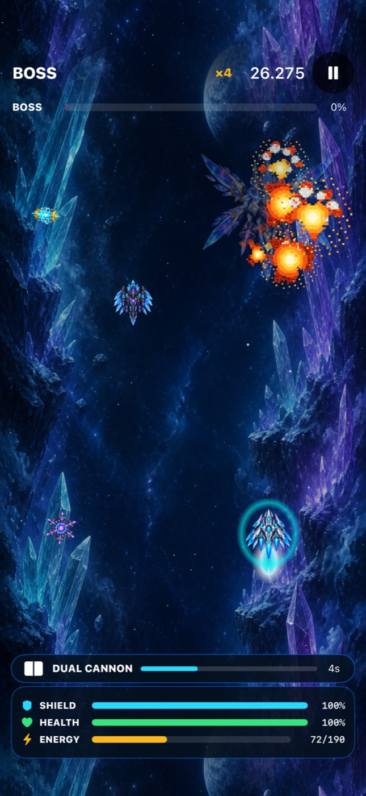
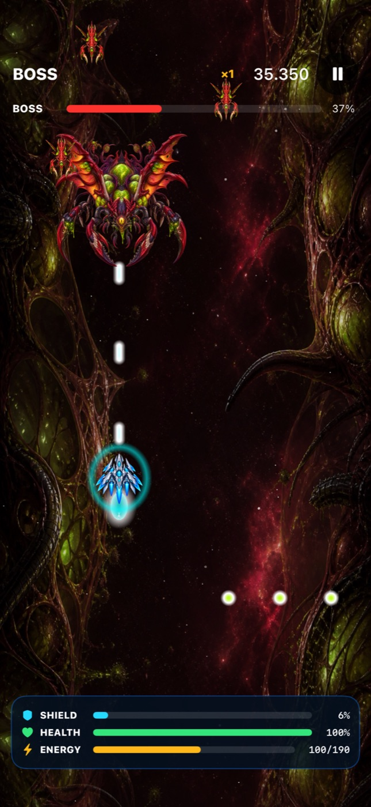
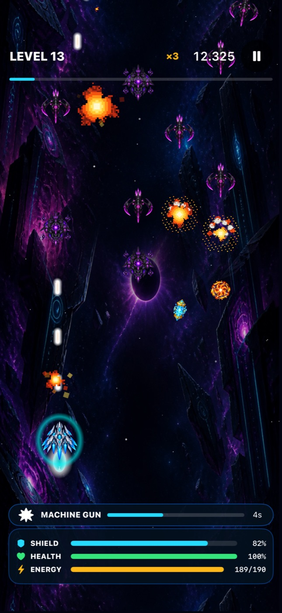
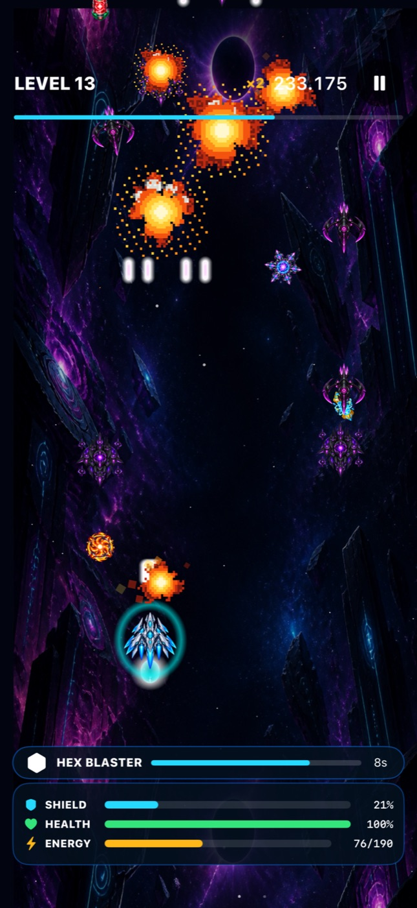
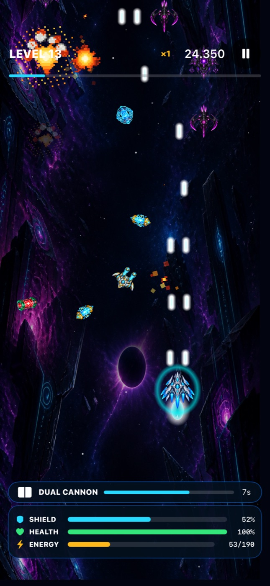
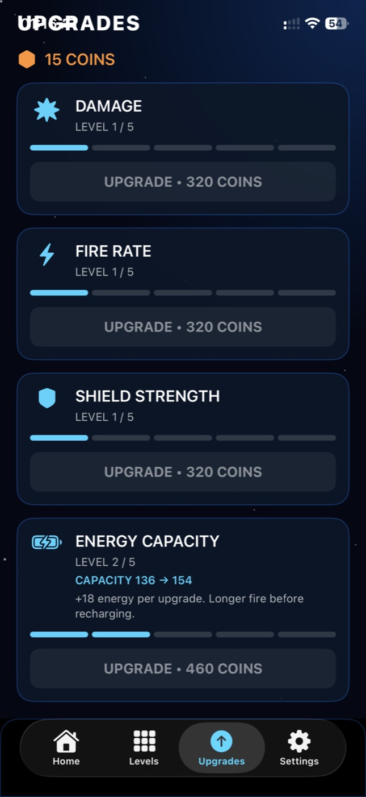
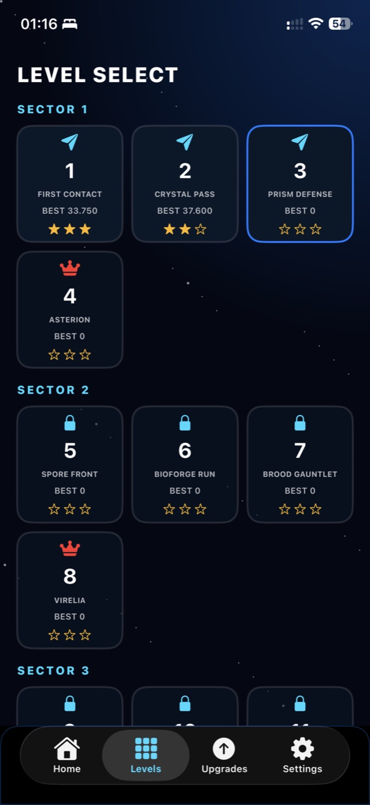

SECTOR 01
Crystal Dominion
Navigate luminous crystal fields and break through Asterion's armored defenses.
An original iPhone arcade shooter
A lone pilot. Fifteen missions. Four colossal bosses. Fight through crystal frontiers, a living bioforge, and the edge of the void.

MISSION 04 ASTERIONSee it in action
Watch a real gameplay capture. No download or installation needed.
Three hostile frontiers
Distinct visual themes, enemy silhouettes and boss encounters shape each leg of the campaign.


Field report
Combat, weapon pickups and progression—captured directly from the game.




The mission briefing
Designed as a focused, single-player arcade experience with touch-first controls.
Drag to steer through incoming fire while your ship automatically targets enemies ahead.
Find rare Dual Cannon, Machine Gun and Hex Blaster modes, each with its own firing pattern.
Read attack patterns, survive shifting phases and exploit each boss’s vulnerable moments.
Spend mission rewards on damage, fire rate, shield strength and energy capacity.
Hulio Studio · Independent game project
This page is a portfolio showcase. Explore the game through its video and screenshots—no installation required.